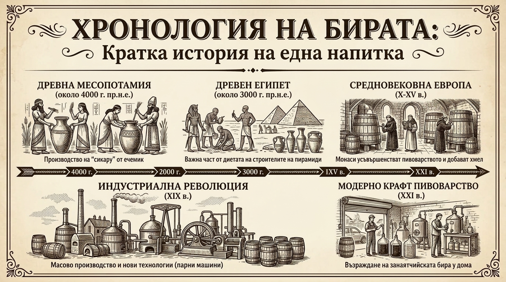

Етимология: Какво означава думата „бира“ в различните езици?
Думата, с която наричаме тази древна напитка, има изключително интересен езиков произход и разкрива как различните култури са я възприемали през вековете:
-
Германските и романските езици (Beer, Bier, Bière):
Произлиза от прагерманската дума *beuwo- (означаваща „ечемик“) или от вулгарнолатинското biber / bibere (със значение „питие“, „пия“). В Англия трайно измества традиционната дума ale през XVI век с навлизането и популяризирането на хмела. -
Славянските езици (Пиво):
В българския, чешкия, полския, руския и други славянски езици думата е „пиво“. Тя произлиза директно от праславянския глагол *piti („пия“). Първоначално „пиво“ е означавало просто „питие“ или „всичко, което се пие“, но с течение на времето се е превърнало в конкретен синоним на ферментиралата ечемичена напитка. -
Испански и португалски (Cerveza, Cerveja):
Думата идва от галско-латинското cerevisia (или cervisia). Коренът ѝ е пряко свързан с Церера (Ceres) – римската богиня на земеделието, зърнените култури и плодородието (откъдето произлиза и думата cereal – зърнена храна). За древните римляни това е било „питието, направено от зърното на Церера“. -
Скандинавските и балтийските езици (Öl, Olut):
Идват от прагерманското *alu (същият корен, от който произлиза английското ale). В древността тази дума е носела значение на „магия“, „екстаз“ или „посещение от духове“, описвайки опияняващия ефект на ферментацията.
Първичният вариант на бирата: От ловците-събирачи до първите фермери
Преди хората да построят първите градове и дори преди официалното възникване на организираното земеделие, първичната бира е била открита практически по случайност.
Преди около 10 000 – 12 000 години ловците-събирачи събирали диви зърнени култури (див ечемик и пшеница). Тъй като сухите зърна били твърде корави за дъвкане и смилане, те ги накисвали в съдове с вода (каменни издълбани купи, издълбани в скалите вдлъбнатини или животински кожи) за няколко дни или седмици, за да омекнат и да станат годни за ядене.
Докато зърното стояло накиснато:
- Влагата провокирала покълване (покълналият ечемик освобождавал ензими, превръщащи нишестето в прости захари).
- Дивите дрожди, намиращи се по люспите на зърното и във въздуха, започвали спонтанна ферментация на захарната вода.
Когато хората се връщали към накиснатото зърно, те откривали, че останалата течност е леко пенлива, със сладникаво-резлив вкус и осигурява приятна релаксация и енергия. Именно тази „ферментирала вода от накиснато зърно“ е първият, най-първичен вариант на бирата в човешката история. Мнозина историци дори смятат, че желанието на хората да имат редовен достъп до тази напитка е била една от основните причини да изоставят номадския живот и да започнат да отглеждат зърно организирано.
Хронология на бирата
Кога и къде се зараждат лагерите?
До Късното Средновековие практически всичката бира е била тип ейл (ферментирала при топли температури с горно-ферментиращи дрожди). Лагерът се ражда сравнително късно:
- Време и място: XV–XVI век в Бавария (Южна Германия) и Алпийските региони.
- Причина за възникване: Поради Баварския закон от 1533 г., който забранявал варенето на бира през лятото (поради висок риск от вкисване и пожари), пивоварите били длъжни да варят бира през зимата и да я съхраняват в хладни пещери в Алпите.
- Еволюция на дрождите: В тези студени пещери (lagern на немски означава „съхранявам / складирам“) оцелели само специални дрожди, способни да ферментират при ниски температури от 8–12°C (Saccharomyces pastorianus). Резултатът бил бира с изключително бистър цвят, чист и свеж вкус, без плодови естери – така се ражда лагерът.
Преходът: От манастирите до гигантските заводи
В продължение на векове пивоварството е било домашна занаятчийска дейност или дело на средновековните манастири, които са били центрове на науката, хигиената и инженерството. Преходът към индустриално масово производство се случва по време на Индустриалната революция през XIX век:
- Парната машина (края на XVIII в.): Позволява механизация на смилането на малца и изпомпването на течности в невиждани дотогава мащаби.
- Изобретяването на термометъра и захаромера (нач. на XIX в.): За първи път пивоварите могат прецизно да измерват и повтарят процесите.
- Хладилната машина на Карл фон Линде (1870-те г.): Това е най-големият пробив за лагерите. Изкуственото охлаждане позволява лагерна бира да се ферментира и съхранява целогодишно навсякъде по света, а не само през зимата в Алпите.
- Откритията на Луи Пастьор и Емил Хансен: Пастьор доказва ролята на дрождите, а Хансен (в лабораторията Carlsberg) изолира първата чиста лагерна дрождева култура.
- Железопътният транспорт и стъклените бутилки: Позволяват на големите заводи да транспортират бира на стотици километри, измествайки малките местни пивоварни и поставяйки началото на глобалните бирени гиганти.

Любопитни факти за бирата
-
Строителите на пирамидите са получавали заплата в бира:
Работниците в Гиза са получавали дневна дажба от около 4 до 5 литра слабоалкохолна бира, която им осигурявала хидратация, калории и минерали. -
Как са открити дрождите:
Луи Пастьор открива през XIX век, че ферментацията се причинява от живи микроорганизми (дрожди), което революционизира пивоварството и позволява прецизния контрол върху вкуса. -
Водата определя стила:
Защо Дъблин е известен със стаут (Гинес), а Пилзен с лек лагер? Причината е в минералния състав на местната вода. Меката вода в Пилзен е идеална за светли лагери, докато твърдата вода в Дъблин пасва перфектно на тъмните малцове. -
Cenosillicaphobia и Cicerone:
Cenosillicaphobia (ценосиликафобия) е шеговитият термин за страха от празна бирена чаша, а Cicerone е официалната титла за сертифициран бирен експерт (аналог на сомелиера при виното).